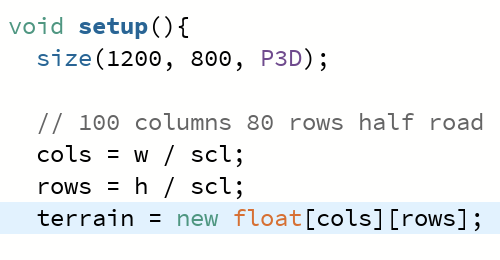
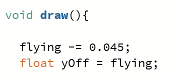
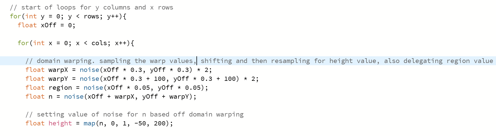
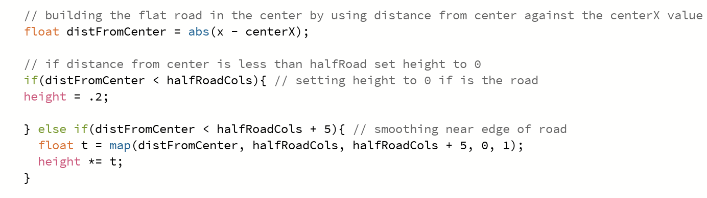
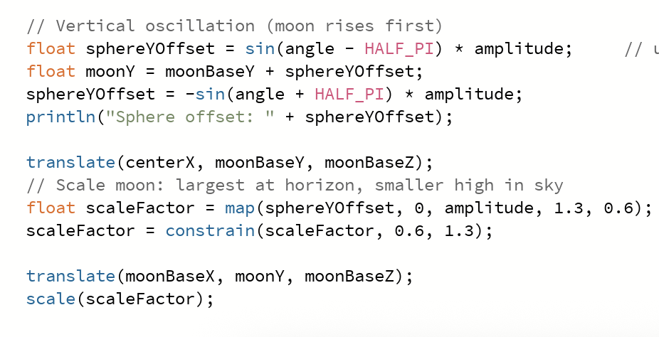

Exploring procedural generation using Perlin Noise to create a synthwave inspired horizon.
Video of Terrain Generator running

Initialize the scene by creating a 3D window in processing.
Scale represents the spacing between vertices and can be increased or decreased.
Store the vertices in a variable of terrain, all heights of the vertices are 0

Draw method runs continuously, using an offset variable give the illusion of movement to scroll through noise field.

Loop through vertices to sample noise for height values, in this example we are domain warping.
Domain warping is accomplished by sampling noise and then resampling noise, this ensures that terrain varies and is more realistic and interesting.

Still looping through all vertices, using absolute value subtract the current X value from the center X value to find the distance from center.
halfRoadCols is a variable that is half of the columns needed for the width of the road.
If the distance from the center is less than the half road columns variable, scale it to create a smooth terrain.

sphereYOffset uses sine function multiplied by amplitude to generate values
moonY uses the base value of the moon added to the sphereYOffset to apply sinusoidal movement to the moon.
To simulate a natural horizon, scaleFactor uses the position of the moon and makes it largest at the horizon and smaller as it rises in the sky.
In the future, I'd like to revisit this project to add a dynamic sky gradient that changes with the moon's height, creating a more immersive atmosphere. I also plan to procedurally generate a star field to make the scene feel more alive.
Domain warping can greatly improve procedural terrain by creating smoother, more believable transitions. I enjoyed learning how complementary techniques can make procedurally generated environments feel less "manufactured" and more like naturally formed landscapes.
Subtle perspective tricks, such as scaling the moon near the horizon and carefully positioning the camera, can create a much more immersive scene. This project taught me that visual polish often comes from thoughtful details rather than large technical changes.